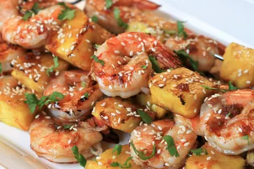

Frank Recipes

Grilled Teriyaki Shrimp and Pineapple Skewers
Ingredients
- Soy Sauce
- Brown Sugar
- Fresh Pineapple
- Honey
- Jumbo Shrimp
Steps
- Whisk together all the marinade ingredients. Add the shrimp and refrigerate for 30 minutes.
- Meanwhile, prepare grill for medium-high heat.
- Remove shrimp from marinade and discard.
- Alternate threading shrimp and pineapple onto the skewers, 3 pieces each.
- Grill for 4-5 minutes, flipping halfway through.
- Serve immediately.